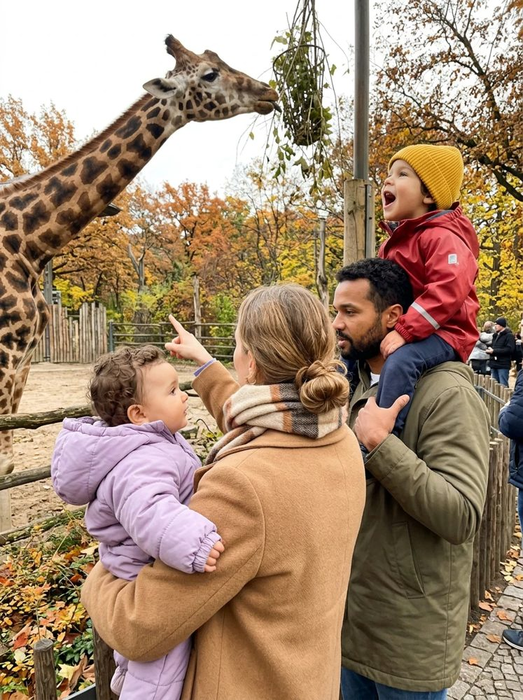
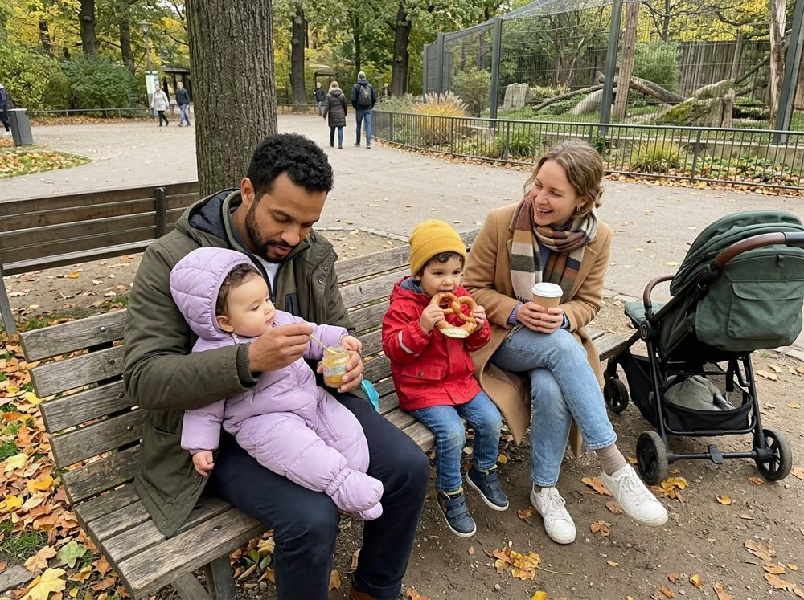
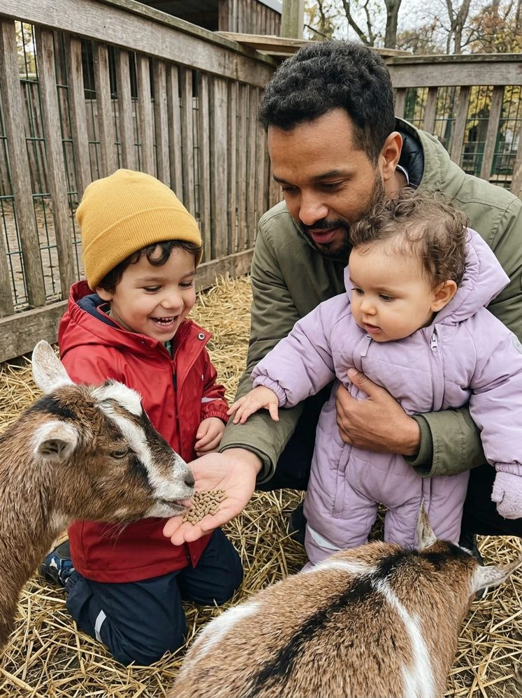
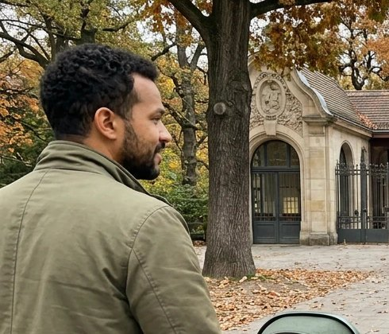

Erster Zoobesuch
Unser erster Zoobesuch zu viert. Theo wollte sofort zu den Giraffen, Hanne hat die Pinguine mit großen Augen verfolgt.




Unser erster Zoobesuch zu viert. Theo wollte sofort zu den Giraffen, Hanne hat die Pinguine mit großen Augen verfolgt.